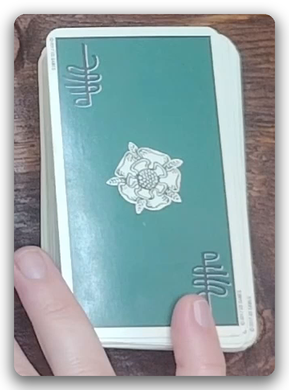
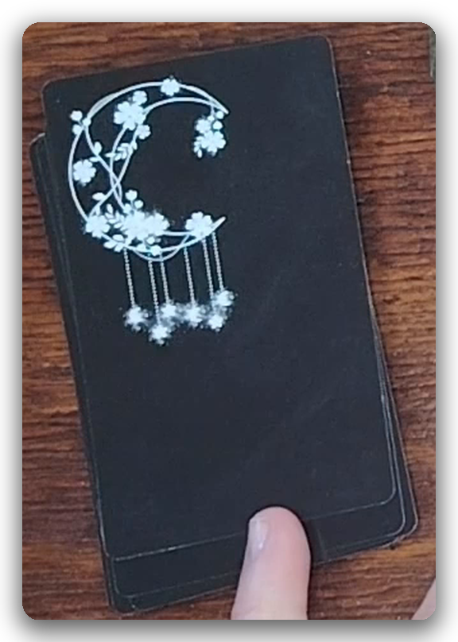
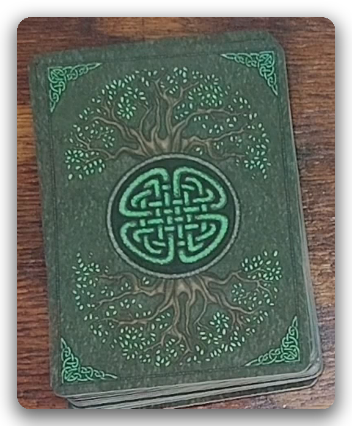
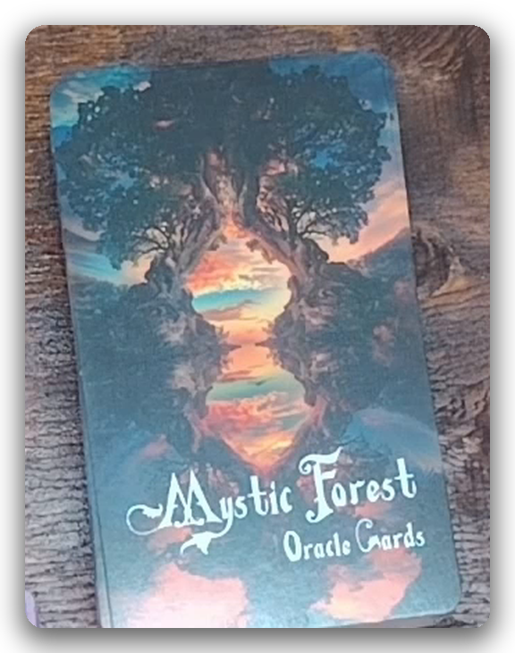
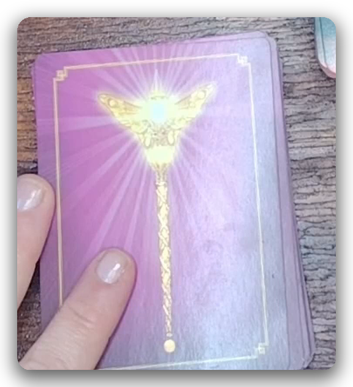

The tarot and oracle decks that live on this table, and find their way into readings.
An earthy, botanical deck, gentle reading for questions rooted in growth, nature, and the seasons of the self.

The classic, borderless edition. A timeless deck for clear, traditional symbolism, often the first reach for a grounded, honest reading.
Luminous, gentle guidance for moments seeking a softer kind of clarity.
Warm, reassuring messages for when you need to feel less alone.
Playful, whimsical guidance, a lighter touch for lighter days.
By Colette Baron-Reid. Messages carried by animal wisdom and instinct.
Reached for in readings about rest, recovery, and gentle repair.
Honest, unflinching guidance for the parts of ourselves we tend to avoid.
Direct, practical prompts for self-guided healing.
By Kyle Gray. Messages that reach back through lineage and spirit.
By Doreen Virtue & Brian Weiss. For questions that feel older than this lifetime.

Soft, quiet guidance, like a whisper you almost missed.

Grounded, seasonal wisdom drawn from the natural world.

Woodland imagery for readings that call for quiet and deep roots.
For questions about connection, communication, and what goes unsaid.
Deep, flowing guidance, for when clarity feels far below the surface.

By Doreen Virtue. A steady, everyday companion deck.
Present-moment prompts for grounding and stillness.